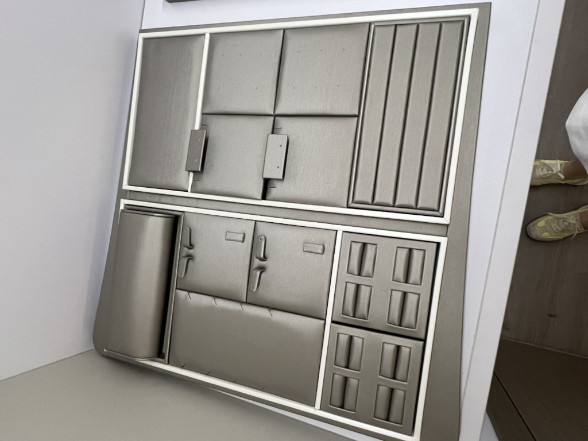

Taotao business-visit photo for hardware-sourcing context. It does not establish certification of any pictured item.
Buyer situation
An importer is comparing offers for surface door closers intended for a U.S. fire-door project. One quote says “UL approved” but identifies no file number or exact certified model. Should the buyer issue a purchase order?
Why this decision matters
A door closer's suitability is tied to its intended application and the door assembly. UL Solutions' door and hardware guide distinguishes product categories, including swinging fire-door closers (GVEV, UL 228) and door closers (FUOR, ANSI/BHMA A156.4). Those category names are not interchangeable proof for a particular project. The buyer needs the proposed model's own certification record and the project specifier's approval for the complete opening.
Evidence to request
| Match | Supplier document or answer | Buyer check |
|---|---|---|
| Product identity | Manufacturer's legal name, exact model and variant, closer arm and mounting option | Do the quote, drawing, sample and proposed carton label use the same identifiers? |
| Certification identity | Issuer, file number, category, current listing and any stated limitations | Does UL Product iQ return this exact model in a category suitable for the specified use? |
| Installation | Manufacturer's instructions, mounting template and required door/arm configuration | Does the proposed installation match the listing and the fire-door assembly design? |
| Order control | Approved sample, bill of materials and change-notice procedure | Will production and receiving checks be able to detect an unapproved substitute? |
The Taotao door-closer product range can start a model discussion. Its presence on a product page is not a claim that a particular closer is listed for a U.S. fire-door application. Certification, MOQ, price and lead time for any proposed model are to be verified.
How to verify and decide
Search the issuing body's official directory by file number and exact model. Compare the result to the supplier's quote and installation documents, then have the project's qualified fire-door professional or authority confirm application to the intended assembly. A logo on a brochure or a report for a different model is a warning sign, not a substitute for the current record.
- Continue when the exact model, category, restrictions and proposed installation agree with the project's requirements.
- Pause when the supplier cannot provide the file number or quotes a different model from the one on the sample.
- Escalate when the assembly design, listing scope or installation condition is disputed; obtain the specifier's or certification body's written position before placing the order.
One action: Send a redacted door-closer model and project requirement to Taotao Trading for an evidence-gap review.